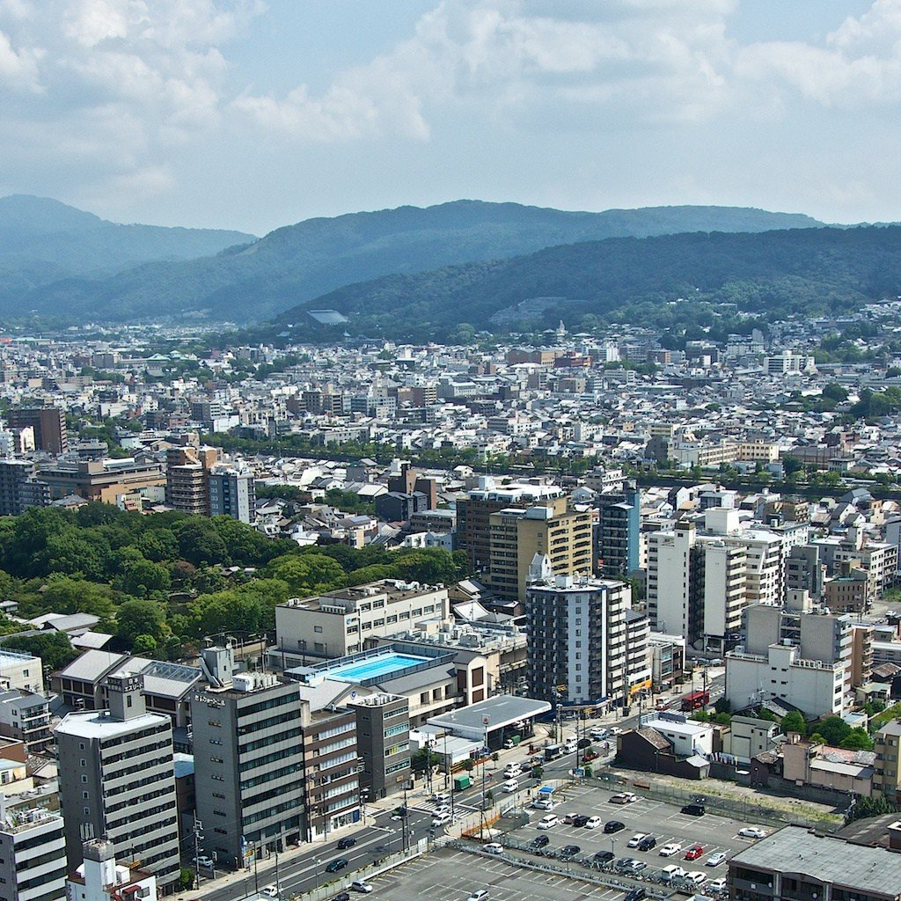
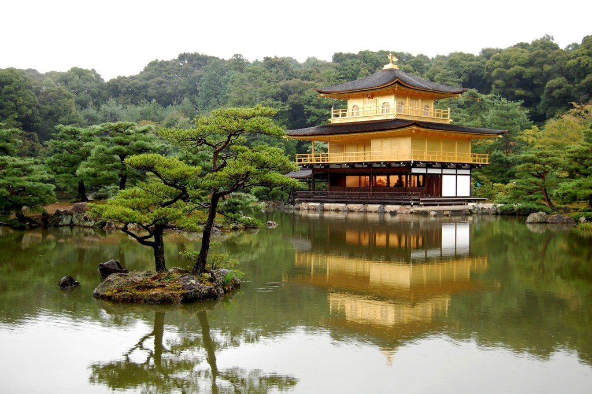
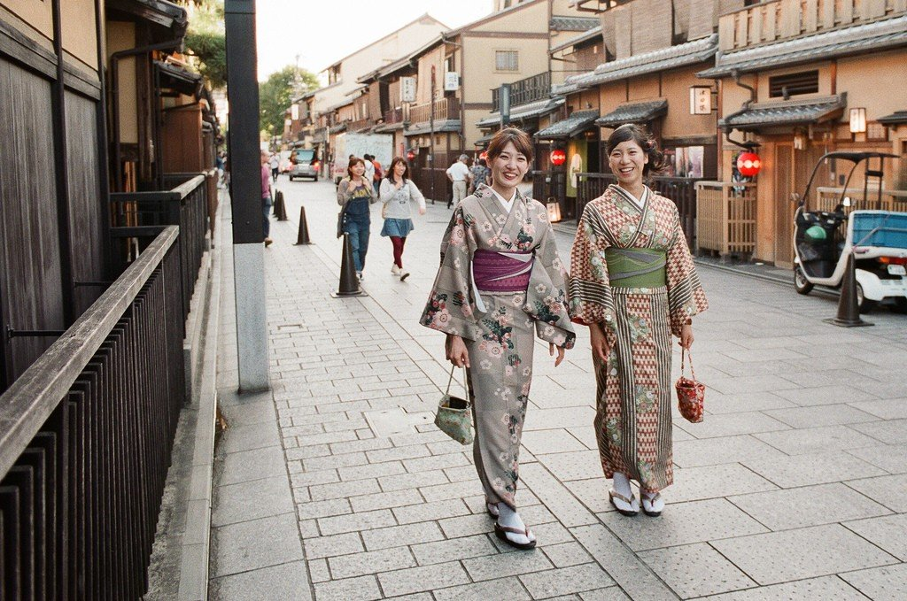
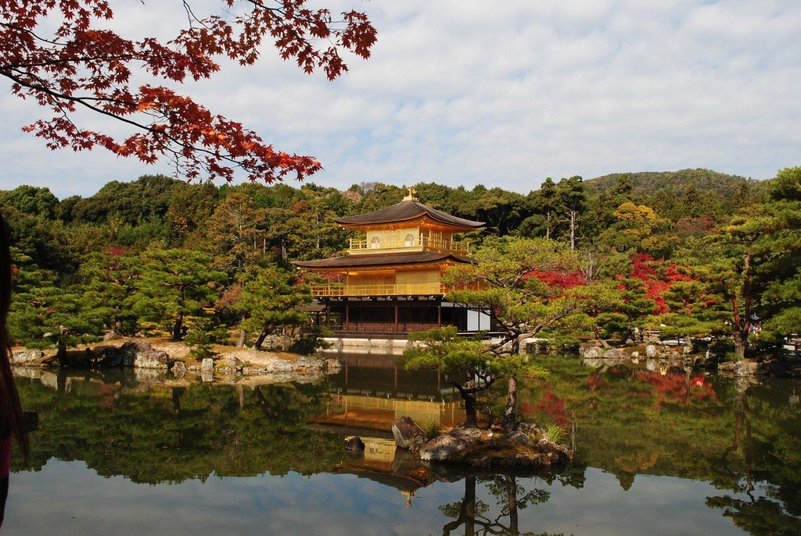
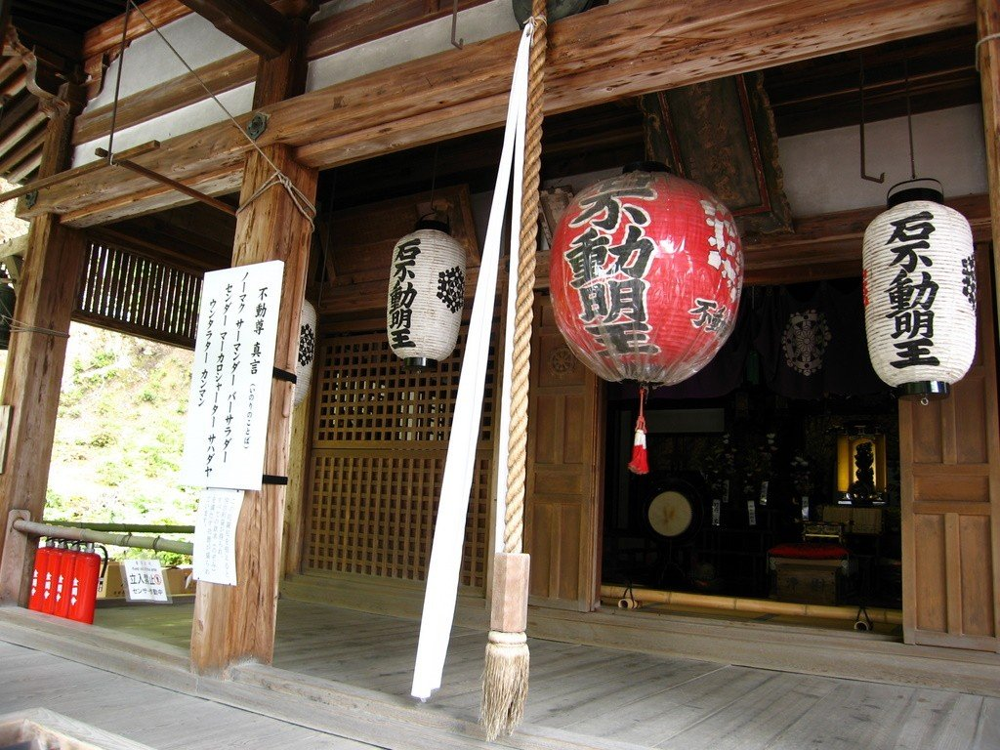
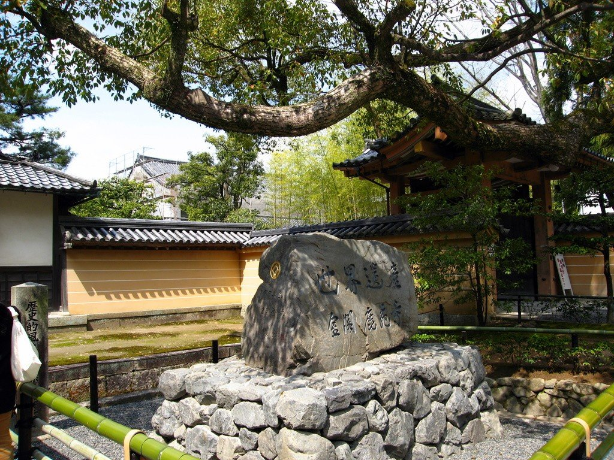
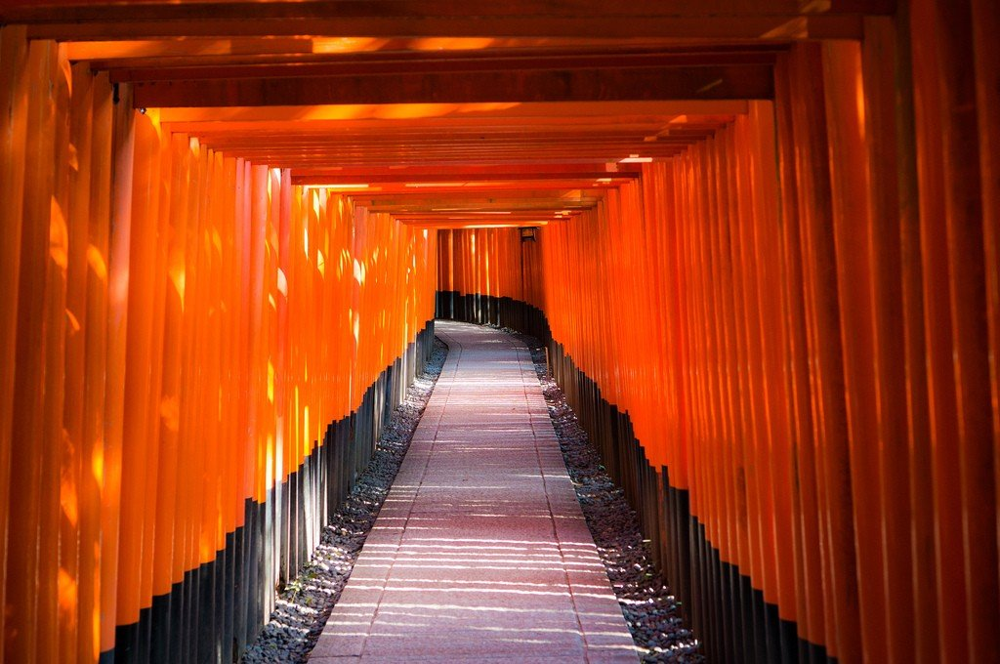
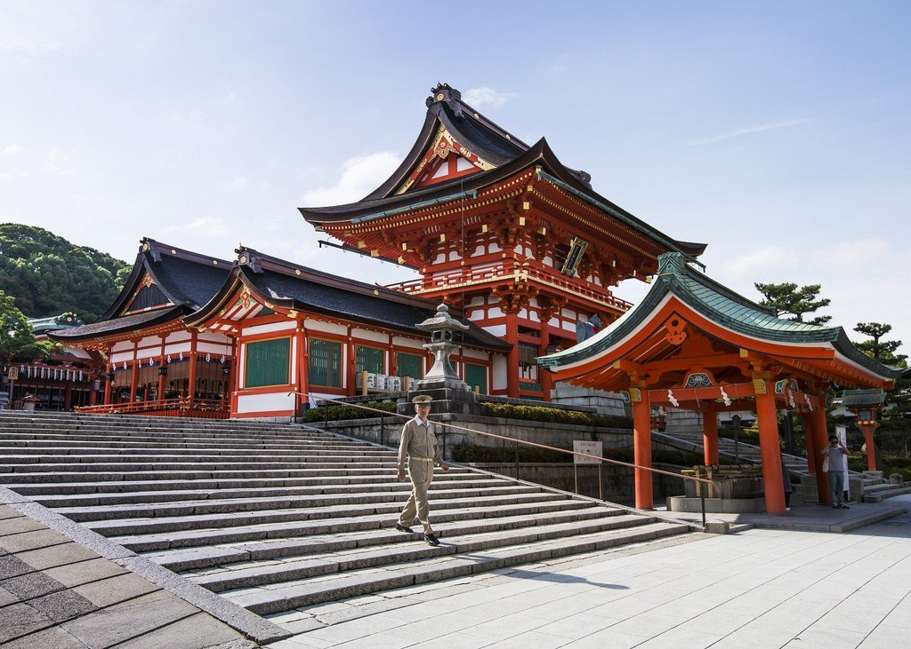
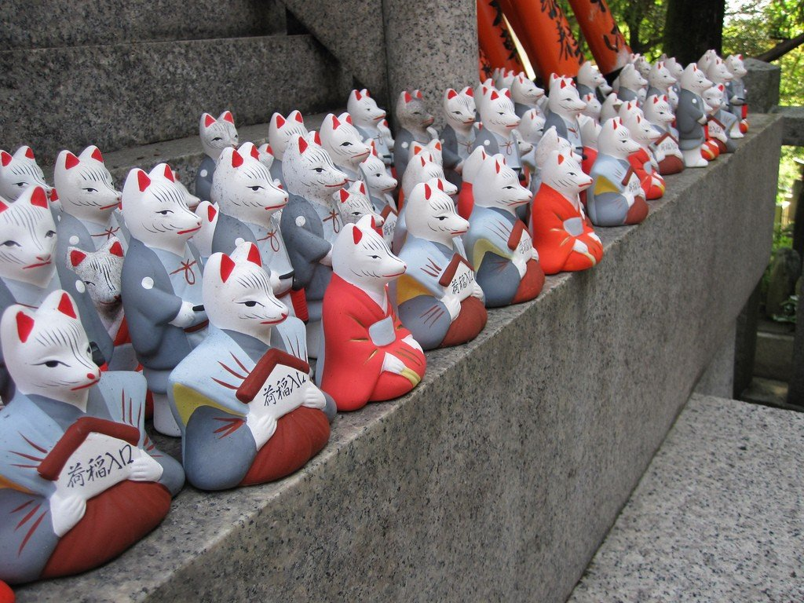

Киото — город в Японии, расположен в центральной части острова Хонсю. Для большинства людей, не посещавших Японию, Киото является синонимом традиционной японской культуры. Сразу представляются древние храмы, императорские дворцы, деревянные хижины, гейши, элегантно разливающие чай во время чайной церемонии, и трепещущие на ветру цветущие ветви вишен. Собственно говоря, в Киото вы найдете и это, и многое другое, несмотря на то, что Киото – огромный современный город с населением 1,5 миллиона человек.
Киото – это не просто город, а настоящая живая история Японии. Если Токио олицетворяет собой стремительное будущее, неоновые огни и бесконечную суету, то Киото – это душа страны, ее культурное сердце и хранилище вековых традиций. Расположенный в регионе Кансай, этот город на протяжении более тысячи лет (с 794 по 1869 год) был императорской столицей. Здесь нет шумных небоскребов и давящих высоток, зато есть сотни старинных храмов, тихих садов и деревянных чайных домиков.
Туристы признаются: попадая в Киото, словно перемещаешься во времени и начинаешь понимать, откуда в современной Японии взялись ее знаменитая размеренность и глубокая философия. В отличие от Токио с его ультрасовременной архитектурой, Киото сохранил традиционную застройку. Здесь до сих пор можно встретить гейш, спешащих по вечерам на работу в район Гион, и увидеть старинные деревянные дома маттия, в которых живут обычные люди. Город не терпит спешки – его изучают не галопом, а неспешно прогуливаясь по древним улочкам.
Киото также известен своей традиционной кухней. Местные специалитеты – это блюда из соевого творога тофу, который здесь готовят по старинным рецептам, и кайсэки – многокомпонентный обед, подаваемый небольшими порциями. В районе Нисики можно найти крытый рынок, где продают свежие морепродукты, японские сладости и соленья. Этот рынок в народе прозвали «кухней Киото», и он идеально подходит для того, чтобы попробовать местную еду без лишних трат.



Главной визитной карточкой города и его архитектурной жемчужиной по праву считается Кинкаку-дзи, или Золотой павильон. Это буддийский храм, верхние два этажа которого полностью покрыты тончайшими листами сусального золота. Расположенный на берегу тихого пруда, павильон отражается в воде создавая удивительный эффект симметрии и покоя. Само по себе двухэтажное здание гармонично сочетает в себе три разных архитектурных стиля: нижний этаж выполнен в стиле аристократических жилищ эпохи Хэйан, средний – в стиле самурайских домов, а верхний – в традиционном китайском стиле.



Лучшее время для посещения Золотого павильона – осень, когда золотые листья кленов оттеняют блеск золотых стен, или зима, когда храм красиво смотрится на фоне белого снега. Вход на территорию стоит недорого, а фотографии здесь получаются настолько красивыми, что их не нужно обрабатывать в редакторах. Рядом с павильоном находится традиционный японский сад с прудом, где плавают карпы кои, и чайный домик, где можно выпить матчу и съесть местную сладость.
Еще одна знаковая достопримечательность Киото – это лес ворот Фусими Инари-тася. Это главное синтоистское святилище бога риса и процветания, и путь к нему вымощен тысячами ярко-оранжевых ворот (тории), которые тянутся вдоль горы Инари на несколько километров. Каждый такой ворота был пожертвован японской компанией или частным лицом в надежде на удачу. Прогулка по этому туннелю занимает около двух часов, и чем выше вы поднимаетесь, тем меньше становится туристов и тише вокруг.



С вершины горы Инари открывается живописный вид на весь Киото. На территории святилища также можно встретить каменных лис – посланников бога Инари, которые держат в зубах символы удачи (ключи, колосья риса или драгоценности). Сам храм работает круглосуточно и бесплатен для посещения, что делает его доступным в любое время суток. Лучше всего приходить сюда рано утром или на закате, когда солнечные лучи пробиваются сквозь ворота и создают магическую атмосферу.
В завершение стоит сказать, что в Киото есть и другие места, достойные внимания: бамбуковая роща в Арасияме, храм Киёмидзу-дэра с деревянной террасой и район Гион, где можно встретить гейш. Но даже если вы ограничитесь Золотым павильоном и лесом ворот Фусими Инари, этого будет достаточно, чтобы влюбиться в этот город навсегда. Не пытайтесь объехать все храмы за один день. Лучше выберите два-три места и посвятите каждому из них хотя бы пару часов. Киото не убежит от вас, а вы сможете по-настоящему проникнуться его удивительной атмосферой.